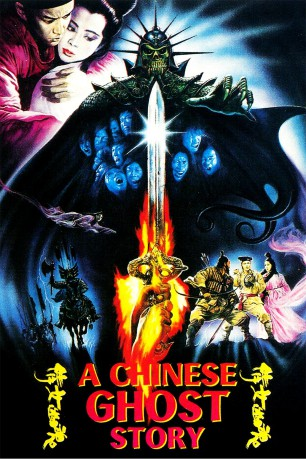

#9299 A Chinese Ghost Story
Alternativ: Verführung aus dem Reich der Toten
 
 IMDB-Wertung: 7.6 / 10
IMDB-Wertung: 7.6 / 10  Metascore: 0
Metascore: 0 
Ning Tsai-Shen, a humble tax collector, arrives in a small town to carry out his work. Unsurprisingly, no-one is willing to give him shelter for the night, so he ends up spending the night in the haunted Lan Ro temple. There, he meets Taoist Swordsman Yen Che-Hsia, who warns him to stay out of trouble, and the beautiful Nieh Hsiao-Tsing, with whom he falls in love. Unfortunately, Hsiao-Tsing is a ghost, bound for all eternity by a hideous tree spirit with an incredibly long tongue that wraps itself round its victims and sucks out their life essence (or 'yang element')...
Jahr: 1987
Dauer: 95 Minuten
FSK: 16
Land: Hong-Kong Studio: e-m-s the DVD-CompanyTonspuren:
Untertitel: Deutsch,
Auflösung: 1080p (1920x1040) Größe: 8120 MB
Genre: Action, Komödie, Fantasy, Liebe
Regisseur: Siu-Tung Ching
Drehbuch: Songling Pu
Soundtrack: Romeo Díaz, James Wong
Darsteller:
 Leslie Cheung als Ling Choi San
Leslie Cheung als Ling Choi San- Joey Wang als Lip Siu Sin
 Wu Ma als Yin Chek Hsia
Wu Ma als Yin Chek Hsia Siu-Ming Lau als Tree Devil
Siu-Ming Lau als Tree Devil Ha Huang als Boss at Tavern
Ha Huang als Boss at Tavern Wai Lam als Hsia-hou
Wai Lam als Hsia-hou- Zhilun Xue als Ching
- Jing Wong als Judge
- David Wu als Secretary Chiu
- Yau Cheung Yeung als Charm Seller
- Mei-Yee Sze als Paintings Seller
- Kam Chiang als Policeman
Datei: X:\HD-Eastern-Collections\Chinese Ghost Story\Chinese Ghost Story, A (1987, FSK16, 1920x1040).mkv seit 25.07.2018
Festplatte: HD Eastern+Western
 Es gibt insgesamt 7 Filme in der Gruppe 'HD-Eastern-Collections\Chinese Ghost Story'
Es gibt insgesamt 7 Filme in der Gruppe 'HD-Eastern-Collections\Chinese Ghost Story'